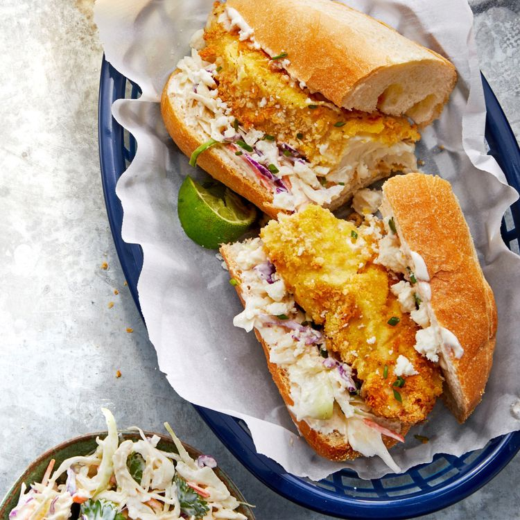

Air-Fried Crispy Fish Poh with Chipotle Slaw

Description
Prep Time: 15 mins
Cook Time: 15 mins
Total Time: 30 mins
Servings: 4
Yield: 4 sandwiches
Ingredients
Crispy Fish:
- 4 (4 ounce) fillets white fish, about 1/2 to 1 inch thick
- 1/4 cup all-purpose flourr
- 1/2 teaspoon ground black pepper
- 1/4 teaspoon garlic powder
- 1 egg
- 1 tablespoon water
- 1/2 cup panko bread crumbs
- 1/4 cup cornmeal
Chipotle Slaw:
- 1/3 cup sour cream
- 1/4 cup mayonnaise
- 1 tablespoon fresh lime juice
- 1/4 teaspoon salt
- 1/4 teaspoon ground dried chipotle pepper
- 3 cups shredded cabbage with carrot (coleslaw mix)
- 1/4 cup chopped fresh cilantro
Sandwiches:
- 4 hoagie rolls, split lengthwise and toasted
- 2 tablespoons crumbled queso fresco
- 4 lime wedges
Steps
Step 1
- Coat an air fryer basket with cooking spray. Rinse fish fillets and pat dry with paper towels
Step 2
- Combine flour, black pepper, salt,a dn garlic powde in a shallow dish
- Whisk egg and water together in a second shallow dish
- Combine bread crumbs and cornmea in a third shallow dish
Step 3
- Dip each fish fillet until fully coated in teh flour mixture, then in the egg mixture, and finally in the bread crumb mixture
- Spray fillets with cookign spray and place in the prepared air fryer basket in a singe layer, cooking in batches if necessary
Step 4
- Cook in the air fryer at 400 degrees F (200 degrees C) until breaded coating is browned and fish flakes easily when tested with a fork, 6 to 10 minutes
Step 5
Step 6
Chef's note
Any 4 to 6 ounce white fish fillets (cod, flounder, or tilapia) can be used for these sandwiches
Return to index